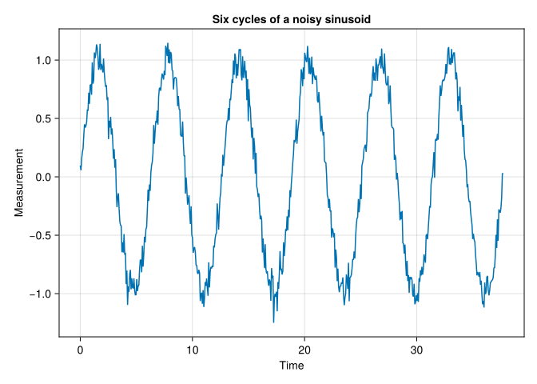
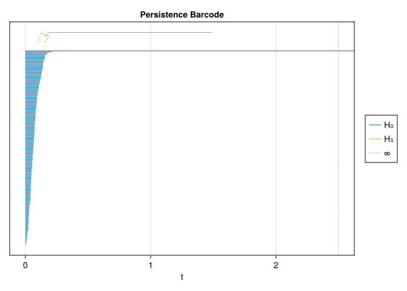
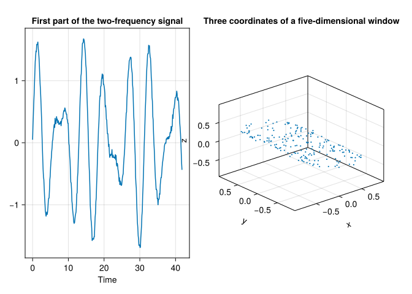

“Time is not a line but a dimension, like the dimensions of space.”
— Margaret Atwood, Cat’s Eye
A time series is a sequence of measurements. A delay window turns several measurements into the coordinates of one point. Slide that window along the series and you get a point cloud. Now the geometry describes repeated patterns of measurements, rather than the original measurement axis.
We will first inspect a noisy sinusoid, compare it with white noise, and then see why two frequencies require more care than two peaks in a spectrum.
16.1 From measurements to point clouds
With embedding dimension \(d\) and an integer delay \(\tau\) measured in samples, form
The physical delay is \(\tau\Delta t\) and the total window duration is \((d-1)\tau\Delta t\). These are different quantities. There are \(N-(d-1)\tau\) windows when the original series has \(N\) samples.
Takens’ theorem concerns a smooth observation of smooth, invertible dynamics on a compact \(m\)-dimensional manifold. For a generic pair of dynamics and observation function, \(2m+1\) delay coordinates give an embedding (Takens 1981). “Generic” is a mathematical assumption; it excludes observations or sampling choices that hide the state. The original theorem does not guarantee reconstruction from an arbitrary finite, noisy series, nor does it identify a general attractor’s dimension with a smooth manifold dimension.
For intuition, a constant observation cannot recover any dynamics, however many delay coordinates we add. A sinusoid sampled only once per period is another failure: all observations have the same phase.
usingTDARipsererusingTDAPersistenceDiagramsusingCairoMakieusingRandomusingStatisticsusingLinearAlgebrausingTDAplotsfunctiondelay_embedding(x, d, τ) d >=1&& τ >=1||throw(ArgumentError("d and τ must be positive integers")) M =length(x) - (d -1) * τ M >0||throw(ArgumentError("The delay window is longer than the signal")) [x[i + (j -1) * τ] for j in1:d, i in1:M]endfunctionstandardized_signal(x) s =std(x) s >0||throw(ArgumentError("A constant signal has no amplitude variation")) (x .-mean(x)) ./ sendfunctionwindow_points(x, d, τ; n_points =180)# Whole-signal standardization removes a chosen amplitude/offset nuisance.# Divide by √d so increasing dimension does not simply inflate all distances. cloud =delay_embedding(standardized_signal(x), d, τ) ./sqrt(d) ids =unique(round.(Int, range(1, size(cloud, 2); length =min(n_points, size(cloud, 2))))) cloud[:, ids]endto_tuples(cloud) = [Tuple(cloud[:, i]) for i inaxes(cloud, 2)]longest_finite(diagram) =maximum((persistence(bar) for bar in diagram ifisfinite(bar)); init =0.0)
longest_finite (generic function with 1 method)
Standardizing the entire signal is a choice to ignore global offset and amplitude. It is not the same as normalizing each window to the unit sphere, which changes geometry further. In a prediction task, learn any cross-sample preprocessing rules on training data. For irregular timestamps, do not interpret an index delay as a constant physical delay: resample carefully or construct windows from actual times.
16.2 A sinusoid: circle, ellipse, or line?
For the noiseless signal \(\sin t\), a two-coordinate window is \((\sin t,\sin(t+\ell))\). At physical lag \(\ell=\pi/2\) it traces a circle. At most other nondegenerate lags it traces an ellipse. At lag 0 or \(\pi\) it collapses to a line segment. A periodic signal therefore needs a suitable observation and lag even in this easiest example (Perea and Harer 2015).
┌ Warning: Found `resolution` in the theme when creating a `Scene`. The `resolution` keyword for `Scene`s and `Figure`s has been deprecated. Use `Figure(; size = ...` or `Scene(; size = ...)` instead, which better reflects that this is a unitless size and not a pixel resolution. The key could also come from `set_theme!` calls or related theming functions.
└ @ Makie ~/.julia/packages/Makie/UjJJY/src/scenes.jl:238

cloud =window_points(signal, 2, τ)fig =Figure()ax =Axis(fig[1, 1], title ="Delay windows near a quarter-period lag", xlabel ="Standardized x(t) / √2", ylabel ="Standardized x(t + lag) / √2", aspect =DataAspect())scatter!(ax, cloud[1, :], cloud[2, :], markersize =5)fig
┌ Warning: Found `resolution` in the theme when creating a `Scene`. The `resolution` keyword for `Scene`s and `Figure`s has been deprecated. Use `Figure(; size = ...` or `Scene(; size = ...)` instead, which better reflects that this is a unitless size and not a pixel resolution. The key could also come from `set_theme!` calls or related theming functions.
└ @ Makie ~/.julia/packages/Makie/UjJJY/src/scenes.jl:238
┌ Warning: Found `resolution` in the theme when creating a `Scene`. The `resolution` keyword for `Scene`s and `Figure`s has been deprecated. Use `Figure(; size = ...` or `Scene(; size = ...)` instead, which better reflects that this is a unitless size and not a pixel resolution. The key could also come from `set_theme!` calls or related theming functions.
└ @ Makie ~/.julia/packages/Makie/UjJJY/src/scenes.jl:238

Inspect the longest \(H_1\) interval relative to the rest. A well-covered annulus supports a loop over a range of scales. That is evidence of cyclic geometry in these windows; it is not an if-and-only-if test for periodicity.
16.3 The same pipeline on white noise
We keep the window dimension, delay, point count, normalization rule, and filtration horizon fixed. Changing all of them at once would make the comparison hard to interpret.
┌ Warning: Found `resolution` in the theme when creating a `Scene`. The `resolution` keyword for `Scene`s and `Figure`s has been deprecated. Use `Figure(; size = ...` or `Scene(; size = ...)` instead, which better reflects that this is a unitless size and not a pixel resolution. The key could also come from `set_theme!` calls or related theming functions.
└ @ Makie ~/.julia/packages/Makie/UjJJY/src/scenes.jl:238
┌ Warning: Found `resolution` in the theme when creating a `Scene`. The `resolution` keyword for `Scene`s and `Figure`s has been deprecated. Use `Figure(; size = ...` or `Scene(; size = ...)` instead, which better reflects that this is a unitless size and not a pixel resolution. The key could also come from `set_theme!` calls or related theming functions.
└ @ Makie ~/.julia/packages/Makie/UjJJY/src/scenes.jl:238
Longest finite H₁ persistence, white noise: 0.204
Gaussian white noise gives a cloud concentrated near the origin, not a uniform blob. A finite random sample can still contain holes and even a relatively long interval. One seed is an illustration, not a null distribution. To turn longest persistence into a test statistic, simulate many series under a null model with the same length and sampling, rerun the entire pipeline, and compare the observed statistic with that distribution. Colored noise or a nonstationary signal may call for a different null model. The uncertainty chapter works through the distinction between a descriptor and statistical evidence.
Conversely, the absence of a clear loop can reflect an unsuitable lag, too few observed cycles, missing data, or excessive noise. It does not prove that the generating process is aperiodic.
16.4 Two frequencies: the arithmetic matters
The signal \(\sin t+0.7\sin(2.7t)\) is still periodic: \(2.7=27/10\), and \(20\pi\) is a common period. Its two spectral peaks are not two rationally independent frequencies.
Instead, consider
\[
x(t)=\sin t+0.7\sin(\sqrt2\,t).
\]
In the mathematical model, the phases \((t\bmod2\pi,\sqrt2\,t\bmod2\pi)\) wind densely around a two-dimensional torus. With suitable delay coordinates, the closure of the window trajectory is an embedded torus (Gakhar and Perea 2024). A finite observation is still only a sampled segment of that trajectory. Floating-point arithmetic approximates the irrational frequency, and a finite series cannot prove irrationality.
A 2D state suggests trying at least five delay coordinates. For this particular trigonometric model we can also inspect the delay map directly: it is a linear image of \((\sin t,\cos t,\sin(\sqrt2t),\cos(\sqrt2t))\). A rank-four coefficient matrix avoids collapsing those four coordinates.
N2 =2400t2 =range(0, 80π; length = N2) # 40 cycles of the base frequencyΔt2 =step(t2)d2 =5τ2=round(Int, (π/2) / Δt2)lag2 = τ2* Δt2coefficient_matrix = [j ==1 ? cos(k * lag2) : j ==2 ? sin(k * lag2) : j ==3 ? 0.7*cos(sqrt(2) * k * lag2) :0.7*sin(sqrt(2) * k * lag2) for k in0:(d2 -1), j in1:4]println("Delay-map singular values: ", round.(svdvals(coefficient_matrix); digits =3))@assertrank(coefficient_matrix) ==4signal2 =sin.(t2) .+0.7.*sin.(sqrt(2) .* t2) .+0.04.*randn(MersenneTwister(7), N2)cloud2 =window_points(signal2, d2, τ2; n_points =200)fig =Figure(size = (850, 350))ax1 =Axis(fig[1, 1], title ="First part of the two-frequency signal", xlabel ="Time")lines!(ax1, t2[1:400], signal2[1:400])ax2 =Axis3(fig[1, 2], title ="Three coordinates of a five-dimensional window")scatter!(ax2, cloud2[1, :], cloud2[2, :], cloud2[3, :], markersize =3)fig
┌ Warning: Found `resolution` in the theme when creating a `Scene`. The `resolution` keyword for `Scene`s and `Figure`s has been deprecated. Use `Figure(; size = ...` or `Scene(; size = ...)` instead, which better reflects that this is a unitless size and not a pixel resolution. The key could also come from `set_theme!` calls or related theming functions.
└ @ Makie ~/.julia/packages/Makie/UjJJY/src/scenes.jl:238

The plotted three-coordinate projection can overlap even when the five-dimensional map is injective. Its appearance does not establish torus topology.
# A bounded computation: 200 windows and a limited horizon.result2 =ripserer(Rips(to_tuples(cloud2); threshold =1.5), dim_max =2)barcode_plot(result2)for k in1:2 diagram = result2[k +1] lifetimes =sort([persistence(bar) for bar in diagram if isfinite(bar)]; rev =true)println("H", k, " largest finite lifetimes = ",round.(lifetimes[1:min(5, length(lifetimes))]; digits =3),"; censored bars = ", count(bar -> !isfinite(bar), diagram))end
┌ Warning: Found `resolution` in the theme when creating a `Scene`. The `resolution` keyword for `Scene`s and `Figure`s has been deprecated. Use `Figure(; size = ...` or `Scene(; size = ...)` instead, which better reflects that this is a unitless size and not a pixel resolution. The key could also come from `set_theme!` calls or related theming functions.
└ @ Makie ~/.julia/packages/Makie/UjJJY/src/scenes.jl:238
The ideal torus has two independent \(H_1\) classes and one \(H_2\) class. In this seeded calculation, the two largest \(H_1\) lifetimes are about 0.76 and 0.43, and the largest \(H_2\) lifetime is about 0.32. This supports an exploratory torus interpretation, but the ideal Betti numbers do not promise that every finite Rips sample will recover it. Check coverage, the relative length of the intervals, and whether bars reach the threshold. A short \(H_2\) bar is especially weak evidence for recovery of the whole torus surface. This example separates a valid quasiperiodic model from the harder task of recovering its closure with finite data.
Try increasing the number of windows and the observation duration independently. Longer observation improves phase coverage; adding more tightly adjacent windows may simply repeat nearby states. Computing \(H_2\) requires higher-dimensional simplex relations and becomes expensive well before the plot looks dense. Parameter optimization for quasiperiodic signals is a substantial topic in its own right (Gakhar and Perea 2024).
16.5 Choosing parameters and comparing with a spectrum
Begin with a question and the physical sampling interval, then check:
Observation duration: enough repetitions, or phase coverage, to represent the proposed dynamics.
Delay and total window length: very small delays concentrate points near the diagonal; special large delays can alias or collapse a periodic signal. A quarter period is useful for this sinusoid, not a universal rule.
Embedding dimension: projections useful for visualization can still merge distinct states. Increasing dimension may separate them, but also adds noise and computational cost.
Preprocessing and subsampling: detrending, filtering, global scaling, and selecting windows all change the object being analyzed. Report them and check sensitivity.
Autocorrelation and mutual information can suggest candidate delays; false nearest neighbors can suggest a dimension. They are heuristics, not automatic verification of Takens’ assumptions. Compare several nearby choices and look for conclusions that persist across them.
A Fourier spectrum remains an excellent starting point for oscillatory data. Computing a Fourier transform does not assume the system generating the data is linear: it decomposes the measured signal into frequency components. Delay-window topology asks a complementary question about the geometry of repeated states. Both methods depend on the observation duration and sampling, and neither turns two resolved peaks into proof of rational independence. Use spectral information to propose periods and window lengths, then inspect the topology those choices produce.
16.6 Predict before running
What does \((\sin t,\sin(t+\pi))\) look like?
TipAnswer
It lies on the line \(y=-x\). The signal is periodic, but this delay hides its phase and gives no circle. Periodicity alone does not guarantee an \(H_1\) feature.
Does replacing \(\sqrt2\) by 1.5 preserve the ideal quasiperiodic torus model?
TipAnswer
No. The frequencies become rationally related, and the noiseless signal has common period \(4\pi\). Its phase trajectory closes rather than filling a torus.
A white-noise sample has one long loop. Does that invalidate persistence as a descriptor?
TipAnswer
No. Persistence describes the sampled geometry, including accidental holes. A statistical claim requires a suitable null distribution and fixed analysis choices, not a rule that noise can never create a loop.
Delay windows are useful because they make temporal patterns geometric. Their interpretation is strongest when the sampling, observation model, normalization, and finite-data limitations are explained along with the barcode.
Gakhar, Hitesh, and Jose A. Perea. 2024. “Sliding Window Persistence of Quasiperiodic Functions.”Journal of Applied and Computational Topology 8 (1): 55–92. https://doi.org/10.1007/s41468-023-00136-7.
Perea, Jose A., and John Harer. 2015. “Sliding Windows and Persistence: An Application of Topological Methods to Signal Analysis.”Foundations of Computational Mathematics 15 (3): 799–838. https://doi.org/10.1007/s10208-014-9206-z.
Takens, Floris. 1981. “Detecting Strange Attractors in Turbulence.” In Dynamical Systems and Turbulence, Warwick 1980, vol. 898. Lecture Notes in Mathematics. Springer. https://doi.org/10.1007/BFb0091924.